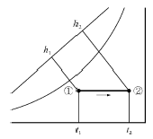
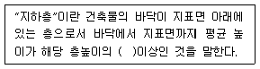
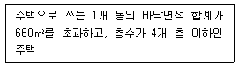
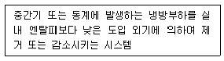
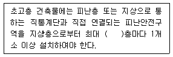

건축설비산업기사 (2016-05-08 기출문제)
1과목: 건축일반
1. 철골 구조의 장점으로 옳지 않은 것은?
- 타구조에 비해 공사비가 매우 낮은 편이다.
- 내구, 내진적이다.
- 장스팬 구조가 가능하다.
- 철근 콘크리트 구조물에 비하여 구조물 전체의 중량이 가볍다.
(정답률: 76%)

2. 건축 음환경 설계시 주안점으로 옳지 않은 것은?
- 청중의 일부에게 소리를 집중하기 위한 실의 단면, 평면계획
- 외부로부터 소음을 차단하기 위한 차음 계획
- 소리의 명료도와 효과도를 위한 잔향시간 계획
- 소리의 반향, 음영부분이 없도록 음향조건 계획
(정답률: 71%)
3. 공장에서 생산되는 형강보다 큰 단면의 보가 필요하여 판을 잘라서 만든 보를 무엇이라 하는가?
- 베이스 플레이트
- 플레이트 거더
- 래티스보
- 허니컴보
(정답률: 66%)
4. 계단의 구성 요소 중 한 계단의 수직면을 무엇이라 하는가?
- 계단실(stair case)
- 디딤판(tread)
- 챌판(riser)
- 계단참(stair landing)
(정답률: 82%)
5. 상점계획에 관한 설명 중 옳지 않은 것은?
- 종업원과 고객의 동선은 분리되지 않아야 한다.
- 종업원의 동선은 짧게, 고객의 동선은 길게 한다.
- 상점의 총면적이란 일반적으로 건축면적을 말한다.
- 상품 이동 동선은 반입, 보관, 포장, 발송과 같은 작업 때문에 필요한 공간이다.
(정답률: 83%)
6. PC 구조의 특성으로 옳지 않은 것은?
- 기계화 시공으로 공기단축이 가능하다.
- 공장 생산이 가능하여 대량생산을 할 수 있다.
- 각 부품과의 접합부가 일체가 되어 강접합으로 하기에 용이하다.
- 정밀도가 높고 강도가 큰 콘크리트 부재를 사용할 수 있다.
(정답률: 68%)
7. 학교의 운영방식에 관한 설명 중 옳지 않은 것은?
- 종합교실형(U형)은 학생의 이동이 없으며 초등학교 저학년에 권장할 만한 형이다.
- 교과교실형(V형)은 일반교실이 각 학년에 하나씩 할당되고, 그 외에 특별교실을 갖는다.
- 달톤형(D형)은 학급, 학생 구분을 없애고 학생들은 각자의 능력에 맞게 교과를 선택하고 일정한 교과가 끝나면 졸업하는 방식이다.
- 플래툰형(P형)은 전학급을 2분단으로 하고, 한쪽이 일반교실 사용할 때 다른 분단은 특별교실을 사용한다.
(정답률: 73%)
8. 사무소 기준층 평면형태의 결정요소 중 가장 거리가 먼 것은?
- 구조상 스팬의 한도
- 덕트, 배관 등 설비시스템상의 한계
- 자연광에 의한 조명한계
- 관리와 대여의 방법
(정답률: 79%)
9. 조명에 악센트를 주며 상품전시를 대상으로 하여 스포트라이트가 사용되는 조명은?
- 직접조명
- 간접조명
- 국부조명
- 반간접조명
(정답률: 94%)
10. 실내의 조도가 옥외 조도의 몇 퍼센트에 해당하는가를 나타내는 값으로 실내의 밝기 정도를 표시하는 것은?
- 반사율
- 광속
- 주광률
- 휘도
(정답률: 77%)
11. 평면 계획상 모듈이 필요하지 않은 건축물은?
- 병원
- 별장
- 아파트
- 고층 사무소
(정답률: 92%)
12. 플랫 슬래브(Flat Slab)에 대한 설명 중 옳지 않은 것은?
- 기둥 상부는 슬래브와 직접 연결된다.
- 기둥, 캐피탈, 드롭패널 등으로 구성된다.
- 실내 공간 이용율이 높은 편이다.
- 덕트 설치가 용이하다.
(정답률: 61%)
13. 주택의 실내동선계획에 대한 설명으로 옳지 않은 것은?
- 동선은 현관으로부터 시작된다.
- 짧고 직선적이어야 한다.
- 가능한 다른 행위를 방해하지 말아야 한다.
- 거실을 통하여 각 실에 접근하는 것이 좋다.
(정답률: 87%)
14. 고층 사무소 건축에서 층고를 낮게 잡는 이유와 가장 거리가 먼 것은?
- 방화상 유리하게 하기 위하여
- 건축비를 줄이기 위하여
- 많은 층수를 확보하기 위하여
- 대규모 공간이 소요된다.
(정답률: 82%)
15. 호텔과 타용도의 시설이 복합된 복합호텔의 특징으로 옳지 않은 것은?
- 출입구가 많아진다.
- 간판이 많아진다.
- 호텔 파사드(facade)의 미관이 강화된다.
- 대규모 공간이 소요된다.
(정답률: 84%)
16. 서고의 조명에 대한 설명으로 옳지 않은 것은?
- 서고 표면통로를 균등하게 조명할 것
- 통로를 충분히 조명하고 또한 눈이 부시지 않도록 할것
- 자연채광에 의한 쾌적함을 고려할 것
- 파손이 적고 취급하기 용이한 기구를 사용할 것
(정답률: 91%)
17. 캔틸레버 보의 주철근 배근으로 가장 적당한 위치는?
- 단면상 하부
- 단면상 상부
- 단면상 중앙
- 주철근 배치가 불필요
(정답률: 67%)
18. 반자틀을 네모 방틀모양으로 하고, 서로 +자로 만나는 곳을 연귀턱맞춤으로 하는 반자는?
- 치받이널반자
- 구성반자
- 살대반자
- 우물반자
(정답률: 71%)
19. 리조트 호텔의 부지 조건으로 가장 거리가 먼 것은?
- 좋은 수원이 있을 것
- 조망 및 주변 경관이 좋을 것
- 관광지의 성격을 충분히 이용할 수 있는 위치일 것
- 근처의 호텔과 경영상의 경쟁 및 제휴를 고려할 것
(정답률: 88%)
20. 주택의 부엌 입에다 간단히 식탁을 꾸민 것을 무엇이라 하는가?
- Living Kitchen
- Dining Kitchen
- Dining Terrace
- Dining Porch
(정답률: 82%)
2과목: 위생설비
21. 오수 중의 유기물이 미생물에 의해 분해되고 안정된 물질로 변화되기 까지 오수 중의 산소량이 얼마만큼 소비되는가를 나타내는 수질오염의 지표가 되는 용어는?
- SS
- DO
- COD
- BOD
(정답률: 88%)
22. 중앙식 급탕방식 중 직접가열식 급탕방법에 관한 설명으로 옳지 않은 것은?
- 저탕조의 구조가 간단하다.
- 급탕온도가 고르지 않게 될 경우가 있다.
- 보일러 내부의 스케일이 발생하지 않는다.
- 저탕조와 보일러를 직접 연결하여 순환 가열하는 것이다.
(정답률: 82%)
23. 급탕설비에서 보일러, 저탕조 등 밀폐 가열장치 내의 압력상승을 도피시키기 위해 설치되는 것은?
- 팽창관
- 용해전
- 신축이음
- 스트레이너
(정답률: 80%)
24. 2개 이상의 엘보를 사용하여 신축을 흡수하는 이음쇠는?
- 신축곡관
- 스위블 조인트
- 슬리브형
- 신축이음 벨로즈형
(정답률: 80%)
25. 옥외 소화전설비의 호스접결구 설치 위치로 옳은 것은? (단, 지면으로부터 높이)
- 0.5m 이상 1m 이하
- 0.5m 이상 1.5m 이하
- 0.8m 이상 1m 이하
- 0.8m 이상 1.5m 이하
(정답률: 81%)
26. 수직관 상부에서 일시에 다량의 물이 낙하하면 그수직관과 수평관과의 연결부 부근에 순간적으로 부압이 발생하여 트랩의 봉수가 파괴되는 현상은?
- 증발 현상
- 모세관 현상
- 자기사이펀 작용
- 유도사이펀 작용
(정답률: 68%)
27. 부패탱크 방식의 정화조에서 1차 처리 장치인 부패조에 주로 이용되는 미생물은?
- 곰팡이균
- 미토콘드리아
- 혐기성 박테리아
- 호기성 박테리아
(정답률: 87%)
28. 호텔의 주방이나 레스토랑의 주방 등에서 배출되는 세정 배수 중의 유지분을 포집하기 위해 사용되는 포집기는?
- 헤어 포집기
- 오일 포집기
- 그리스 포집기
- 플라스터 포집기
(정답률: 81%)
29. 양수펌프 중심으로부터 2m 위에 저수조 수위가 일정하게 있고, 고가수조 수위는 펌프 중심으로부터 30m 위에 있다. 양수배관 전체길이가 38m, 토출압력이 15kPa일 때 최저 필요 양정[mAq]은? (단, 양수배관의 마찰손실수두는 50mmAq/m, 관이음 및 밸브류의 상당관 길이는 배관 길이의 50%로 한다.)
- 30.85
- 34.85
- 32.35
- 36.35
(정답률: 32%)
30. 배수배관에서 트랩의 가장 주된 역할은?
- 배수관 내의 유속을 조정한다.
- 급수관 내의 급수 흐름을 원활히 한다.
- 유도 사이펀 작용에 의한 봉수 파괴를 방지한다.
- 배수관 내의 악취나 가스가 실내로 유입되는 것을 방지한다.
(정답률: 75%)
31. 급수량의 산정방법에 속하지 않는 것은?
- 인원수에 의한 방법
- 기구수에 의한 방법
- 유효면적에 의한 방법
- 사용시간에 의한 방법
(정답률: 64%)
32. 도시가스 배관 중 지상배관의 표면 색상은 원칙적으로 어떤 색으로 하는가?
- 적색
- 황색
- 청색
- 녹색
(정답률: 90%)
33. 호칭경 20A(내경 : 21.9mm)인 관내를 흐르는 유체의 평균유속이 2m/sec 일 때, 체적유량은?
- 6.28L/min
- 7.5L/min
- 37.68L/min
- 45.18L/min
(정답률: 31%)
34. 옥내 배관 시공 시 주철관이 가장 많이 사용되는 것은?
- 급수관
- 급탕관
- 오수관
- 통기관
(정답률: 64%)
35. 다음 중 모든 기구의 트랩에 각개통기 방식을 적용하기 가장 곤란한 이유는?
- 통기가 원활하지 못해서
- 배수관 내의 유수가 원활하지 못해서
- 설치비용이 다른 방식에 비해 많아서
- 자기 사이폰 작용의 방지에 효과가 없어서
(정답률: 77%)
36. 19층 건물에서 옥내 소화전의 설치개수가 가장 많은층의 설치개수가 8개 일 때, 이 건물에 설치하여야 하는 옥내소화전설비의 수원의 저수량은 최소 얼마 이상이어야 하는가?(2021년 4월 01일 개정된 규정 적용됨)
- 5.2m3
- 10.4m3
- 13m3
- 20.8m3
(정답률: 60%)
37. 급탕 설비에서 서모스탯(thermostat)은 어떤 용도로 사용되는가?
- 안전밸브 역할
- 유량분배 조절
- 체적팽창 흡수
- 온수 온도 자동조절
(정답률: 81%)
38. 헌터의 부하곡선에서 구할 수 있는 것은?
- 압력
- 마찰계수
- 손실수두
- 동시 사용유량
(정답률: 53%)
39. 다음의 배관 재료 중 열팽창이 가장 큰 것은?
- 연관
- 동관
- 강관
- 경질염화비닐관
(정답률: 63%)
40. 펌프의 흡입양정이 3m, 토출양정이 10m, 관내 마찰손실이 0.02MPa일 때 전양정은?
- 12m
- 13m
- 15m
- 20m
(정답률: 63%)
3과목: 공기조화설비
41. 습공기의 상태변화 성분을 절대습도 변화량에 대한 전열량의 변화량 비율로 나타낸 것은?
- 현열비
- 잠열비
- 열수분비
- 바이패스비
(정답률: 71%)
42. 다음 중 펌프의 특성곡선에 나타나지 않는 것은?
- 유속
- 양정
- 효율
- 축동력
(정답률: 50%)
43. 공기조화기 내 냉각코일은 통과하는 공기와 열교환을 하게 된다. 이와 관련된 설명으로 옳지 않은 것은?
- 바이패스 팩트와 컨택트 팩트의 곱은 1이다.
- 코일 핀의 형상에 따라 바이패스 팩트의 곱은 1이다.
- 냉각코일의 열수가 많을수록 바이패스 팩트는 작아진다.
- 냉각코일을 통과하는 공기의 속도가 빠를수록 바이패스 팩트는 커진다.
(정답률: 60%)
44. 송풍기의 풍량제어법 중 축동력이 가장 적게 소요되는 것은?
- 회전수 제어
- 토출 댐퍼 제어
- 흡입 댐퍼 제어
- 흡입 베인 제어
(정답률: 80%)
45. 전열 교환기의 선정 시 유의사항으로 옳지 않은 것은?
- 압력손실이 클 것
- 운전용 동력이 작을 것
- 가격이 저렴하고 시스템이 복잡하지 않을 것
- 열 회수율이 좋고, 고온측 저온측 유체의 누설이 없을 것
(정답률: 77%)
46. 실내에 열을 발산하는 기기가 있으며 공기에 가해진 열량이 9kW, 실용적이 1,000m3인 실을 20℃로 유지하기 위한 필요 환기량은? (단, 외기온도는 15℃ 공기의 정압 비열은 1.01kJ/kg ㆍ k, 공기의 밀도는 1.2kg/m3이다.)
- 약 2,041m3/h
- 약 2,792m3/h
- 약 5,347m3/h
- 약 7,627m3/h
(정답률: 56%)
47. 냉방부하의 종류 중 현열과 잠열로 구성된 것은?
- 인체의 발생열량
- 유리로부터의 취득열량
- 벽체로부터의 취득열량
- 덕트로부터의 취득열량
(정답률: 77%)
48. 환기와 관련된 실내압의 설명으로 옳지 않은 것은?
- 연소용 공기가 필요한 경우 실내를 정(+)압으로 한다.
- 다른 실의 오염 공기의 침입을 방지하는 경우 실내를 부(-)압으로 한다.
- 실내 악취나 유해가스를 다른 실로 유출되지 않도록 하는 경우 실내를 부(-)압으로 한다.
- 실내공기를 강제적으로 배출시키는 경우 실내는 부(-)압이 된다.
(정답률: 53%)
49. 기계식 증기트랩에 속하는 것은?
- 벨 트랩
- 버킷 트랩
- 벨로즈 트랩
- 바이메탈 트랩
(정답률: 59%)
50. 복사난방에 관한 설명으로 옳지 않은 것은?
- 실내 상하의 온도차가 적다.
- 열용량이 작기 때문에 간헐난방에 적합하다.
- 천정고가 높은 공간에서도 난방감을 얻을 수 있다.
- 실내에 방열기를 설치하지 않으므로 바닥이나 벽면을 유용하게 이용할 수 있다.
(정답률: 79%)
51. 덕트의 마찰저항에 관한 설명으로 옳지 않은 것은?
- 유속의 제곱에 비례한다.
- 덕트의 직경이 클수록 마찰저항은 커진다.
- 덕트의 길이가 길수록 마찰저항은 커진다.
- 원형 덕트가 장방형 덕트에 비해 마찰저항이 작다.
(정답률: 76%)
52. 다음의 습공기선도에서 화살표 방향의 상태 변화과 정으로 옳은 것은?

- 가열
- 냉각
- 가습
- 냉각, 감습
(정답률: 64%)
53. 공기조화기에 사용되는 에어필터의 효율측정법에 속하지 않는 것은?
- 중량법
- 비색법
- 계수법
- 분해법
(정답률: 45%)
54. 겨울철 건물의 외벽체를 통한 열손실을 감소시키는 방법으로 옳지 않은 것은?
- 외단열로 시공한다.
- 벽체에 면적을 작게 한다.
- 벽체의 열관류율을 작게 한다.
- 실내의 설계기준 온도를 높인다.
(정답률: 68%)
55. 냉온수 배관의 기본회로 방식에 관한 설명으로 옳지 않은 것은?
- 배관의 분기부에는 원칙적으로 밸브를 설치한다.
- 배관방식은 원칙적으로 리버스리턴 방식으로 한다.
- 배관의 최소 구경은 원칙적으로 호칭경은 25A로 한다.
- 밀폐회로 방식에 대해서는 1개의 순환계통에 팽창탱크는 1기로 한다.
(정답률: 72%)
56. 어느 유리창의 일사에 의한 흡수율이 5.3%이고, 반사율은 10.9%이다. 일사량이 300W/m2일 때 투과량은?
- 251.4W/m2
- 293.3W/m2
- 323.6W/m2
- 353.9W/m2
(정답률: 34%)
57. 가열코일을 통과하는 풍량이 30,000kg/h, 정면 풍속이 2.5m/s일 때 코일의 정면면적은?(오류 신고가 접수된 문제입니다. 반드시 정답과 해설을 확인하시기 바랍니다.)
- 1.47m2
- 2.78m2
- 3.33m2
- 4.95m2
(정답률: 36%)
58. 다음 중 난방시 벽체의 관류손실 열량을 계산할 때 방위계수를 가장 작게 적용하는 방위는?
- 북쪽
- 동쪽
- 남쪽
- 남서쪽
(정답률: 71%)
59. 다음의 취출구 중 에어커튼(air curtain)용으로 가장 적합한 것은?
- 라인(line)형
- 베인(vane)형
- 다공판(multi vent)형
- 아네모스텟(annemostat)형
(정답률: 73%)
60. 수관보일러에 관한 설명으로 옳지 않은 것은?
- 연관식보다 사용압력이 높다.
- 연관식보다 설치면적이 작다.
- 예열시간이 짧고 효율이 좋다.
- 부하변동에 대한 추종성이 높다.
(정답률: 59%)
4과목: 건축설비관계법규
61. 다음 중 소방안전관리대상물의 소방계획서에 포함되어야 하는 사항이 아닌 것은?
- 공동 및 분임방화관리에 관한 사항
- 화재 예방을 위한 자제점검계획 및 진압대책
- 소방시설, 피난시설 및 방화시설의 설치 계획
- 피난층 및 피난시설의 위치와 피난경로의 설정 등을 포함한 피난계획
(정답률: 59%)
62. 다음 중 건축물의 부위별 열관류율 기준이 가장 작은 부위는? (단, 중부 지역의 경우)
- 바닥난방인 충간 바닥
- 외기에 직접 면하는 거실의 외벽
- 외기에 직접 면하는 최하층에 있는 거실의 바닥
- 외기에 직접 면하는 최상층에 있는 거실의 반자
(정답률: 51%)
63. 음은 건축법상 지하층의 정의이다. ( )안에 알맞은 것은?

- 2분의 1
- 3분의 1
- 3분의 2
- 4분의 3
(정답률: 82%)
64. 승용승강기를 설치하여야 하는 건축물에서 승용승강기의 설치대수를 결정할 수 있는 직접적 요소로만 나열된 것은?
- 건축물의 용도, 6층 이상의 거실면적의 합계
- 건축물의 층수, 6층 이상의 거실면적의 합계
- 건축물의 용도, 6층 이상의 바닥면적의 합계
- 건축물의 층수, 6층 이상의 바닥면적의 합계
(정답률: 63%)
65. 다음의 소방시설 중 경보설비에 속하지 않는 것은?
- 비상방송설비
- 자동화재탐지설비
- 무선통신보조설비
- 자동재화속보설비
(정답률: 73%)
66. 건축법령상 다음과 같이 정의되는 주택의 종류는?

- 아파트
- 연립주택
- 다세대주택
- 다가구주택
(정답률: 70%)
67. 특정소방대상물이 문화 및 집회시설인 경우, 모든 층에 스프링클러를 설치하여야 하는 수용인원 기준은?
- 50명 이상
- 100명 이상
- 150명 이상
- 200명 이상
(정답률: 70%)
68. 연면적 200m2를 초과하는 초등학교에 설치하는 복도의 유효너비는 최소 얼마 이상이어야 하는가? (단, 양옆에 거실이 있는 복도)
- 1.5m
- 1.8m
- 2.1m
- 2.4m
(정답률: 58%)
69. 화재예방 ㆍ 소방시설 설치 유지 및 안전관리에 관한 법령에 따른 피난층의 정의로 가장 알맞은 것은?
- 지상 1층
- 지상 2층 이상의 층
- 지상으로 통하는 직통계단이 있는 층
- 곧바로 지상으로 갈 수 있는 출입구가 있는 층
(정답률: 71%)
70. 건축물의 에너지절약 설계기준에 따른 용어의 정의가 옳지 않은 것은?
- 거실의 외벽이라 함은 거실의 벽 중 외기에 직접 또는 간접 면하는 부위를 말한다.
- 일사조절장치라 함은 태양열의 실내 유입을 조절하기위한 목적으로 설치하는 장치를 말한다.
- 외피라 함은 거실 또는 거실외 공간을 둘러싸고 있는 벽, 지붕, 바닥, 창 및 문 등으로서 외기에 직접 또는 간접 면하는 부위를 말한다.
- 방풍구조라 함은 출입구에서 실내의 공기 교환에 의한 열출입을 방지할 목적으로 설치하는 방풍실 또는 회전문 등을 설치한 방식을 말한다.
(정답률: 66%)
71. 주요구조부를 내화구조로 하여야 하는 건축물은?
- 종교시설의 용도로 쓰는 건축물로서 집회실의 바닥면적의 합계가 100m2인 건축물
- 창고시설의 용도로 쓰는 건축물로서 그 용도로 쓰는 바닥면적의 합계가 300m2인 건축물
- 공장의 용도로 쓰는 건축물로서 그 용도로 쓰는 바닥면적의 합계가 1500m2인 건축물
- 위험물저장 및 처리시설의 용도로 쓰는 건축물로서 그 용도로 쓰는 바닥면적의 합계가 500m2인 건축물
(정답률: 63%)
72. 건축물의 에너지절약 설계기준상 다음과 같이 정의되는 용어는?

- 변풍량제어시스템
- 이코노마이저시스템
- 비례제어운전시스템
- 대수분할운전시스템
(정답률: 77%)
73. 축냉식 전기냉방설비의 설계기준 내용으로 옳지 않은 것은?
- 축열조는 보온을 철저히 하여 열손실과 결로를 방지하여야 한다.
- 열교환기에서 점검을 위한 부분은 해체와 조립이 용이하도록 하여야 한다.
- 열교환기는 시간당 최대냉방열량을 처리할 수 있는 용량 이상으로 설치하여야 한다.
- 자동제어설비는 수동조작을 할 수 없도록 하여야 하며 감시기능 등을 갖추어야 한다.
(정답률: 80%)
74. 옥내소화전설비를 설치하여야 하는 특정소방 대상물의 연면적 기준은?
- 1,000m2 이상
- 2,000m2 이상
- 3,000m2 이상
- 4,000m2 이상
(정답률: 65%)
75. 업무시설의 거실에 설치하는 반자의 높이는 최소 얼마 이상이어야 하는가?
- 1.8m
- 2.1m
- 2.4m
- 2.7m
(정답률: 67%)
76. 다음 중 건축허가 등을 함에 있어서 미리 소방본부장 또는 소방서장의 동의를 받아야 하는 대상 건축물 등에 속하지 않는 것은?
- 관망탑
- 항공기 격납고
- 노유자시설 및 수련시설로서 연면적 200m2인 건축물
- 지하층이 있는 건축물로서 바닥 면적이 80m2인 층이 있는 것
(정답률: 66%)
77. 다음 중 대수선의 범위에 속하지 않은 것은?
- 기둥 3개를 수선 또는 변경하는 것
- 특별피난계단을 증설 또는 해체하는 것
- 미관지구 안에서 건축물의 담장을 변경하는 것
- 내력벽의 벽면적 20m2를 수선 또는 변경하는 것
(정답률: 52%)
78. 다음은 초고층 건축물에 설치하는 피난안전구역에 관한 기준 내용이다. ( )안에 알맞은 것은?

- 10개
- 20개
- 30개
- 50개
(정답률: 79%)
79. 다음 중 거실의 용도에 다른 조도기준이 가장 높은 것은? (단, 건축물의 피난 ㆍ 방화구조 등의 기준에 관한 규칙에 따른 조도기준)
- 거주(식사)
- 작업(제조)
- 집무(계산)
- 집회(회의)
(정답률: 64%)
80. 건축법령상 주요구조부에 속하지 않는 것은?
- 바닥
- 지붕틀
- 내력벽
- 옥외계단
(정답률: 82%)